前言
Transformer是当前研究最热的一个领域，基于transformer的模型在自然语言处理任务中兴起并且取得了巨大的成功，Google 提出ViT模型将transformer引入到视觉领域里，基于transformer的视觉模型在各个视觉下游任务中不断刷榜，引来了更多的人投入到transformer的大军中，下面我们结合理论和代码对transformer的模型架构进行详细分析,
Attention 机制
在时间序列相关任务中之前一般使用RNN，LSTM和GRU等循环神经网络或者使用一维CNN对序列进行特征提取。循环神经网络通过对历史信息进行编码输出为隐藏层信息，并作为下一个时间点处理时的输入，以此达到对时间序列进行特征提取的目的，但是这种方式主要具有以下缺点：
时间序列中的每个点的特征提取依赖于其前面序列的编码信息，因此循环神经网络只能顺序处理时间序列，无法并行，计算速度很慢。
随着序列的增长，序列前面的信息会逐渐遗忘甚至消失，导致无法建立长序列数据内的关系
一维CNN用于处理时间序列问题时受限于卷积核的大小同样无法捕捉长序列数据内的关系。为了解决上述方法中的效率低下和序列内数据关系难以建立的问题，《Attention Is All You Need》向我们证明了基于纯Attention机制的有效性，本文以这篇论文来分析Transformer的原理
时间序列特征提取范式
以序列标注为例（如词性标注，对每个词输出其词性），模型需要对每个输入向量（Vector）输出一个标注（scale or class），其任务范式如图1所示
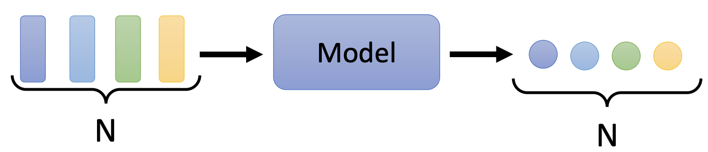
图1 序列标注
在基于RNN和CNN的时间序列特征提取模型中，一般面向是序列的局部特征，每个输出依赖与当前输入序列部分window，如图2所示
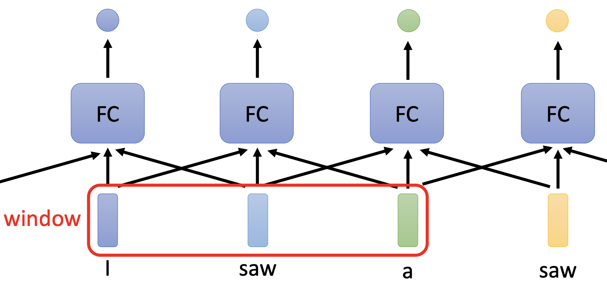
图2 RNN，CNN对于时间序列的处理方式
而self-attention的每个输出都是对整个序列进行特征提取，其工作方式大致如图3所示， 每个输出的计算是综合了整个序列的特征，这解决了CNN和RNN在处理时间序列时距离当前输入点过长的特征难以提取的问题。
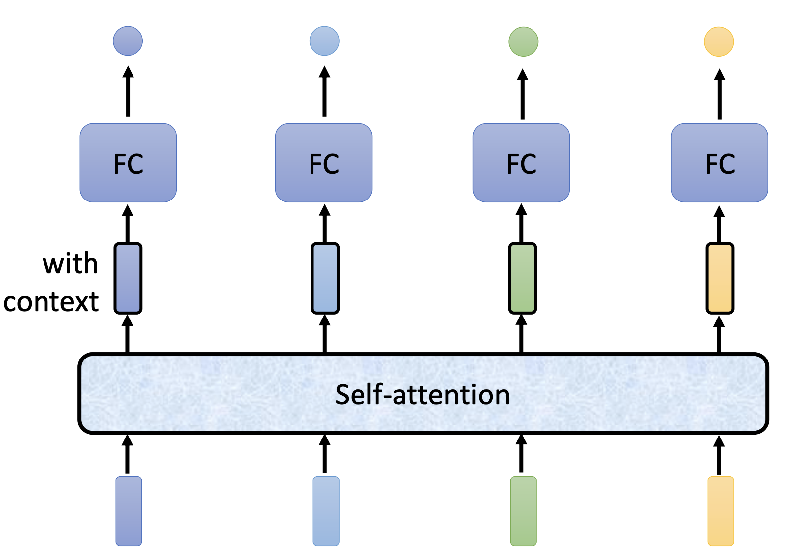
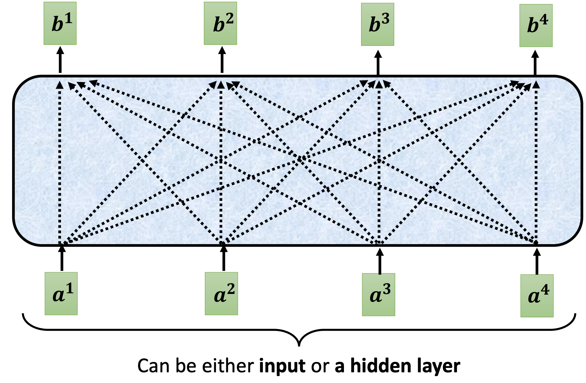
图3 基于self-attention 的序列标注过程
Self-Attention 原理
self-attention的实现方式有很多，如dot-product，additive， scaled dot-product，本文以scaled dot-product介绍self-attention，其他类型的attention可以参考Post not found: 各种各样的Attention
attention score
在序列特征提取中，每个输出不仅受当前序列输入的影响，也受输入序列中其他点的影响，因此在self-attention中引入了attention score的概念，计算方式如图4所示，其中q i ， k i q^i， k^i q i ， k i
q i = W q a i k i = W k a i q^i = W^qa^i \\
k^i = W^ka^i
q i = W q a i k i = W k a i
令α i ， j = q i k j \alpha_{i，j} = q^ik^j α i ， j = q i k j i i i j j j j j j i i i i i i
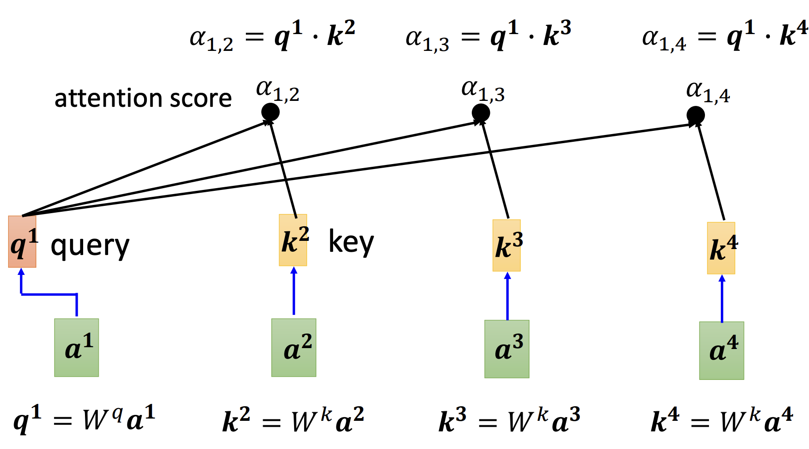
图4 attention score的计算过程
然后对attention score进行soft-max操作，使得每个输出点的attention score的总和为1，其计算方式如图5所示，计算公式如下
α 1 ， i ′ = e α 1 ， i ∑ j e α 1 ， i \alpha^{'}_{1，i} = \frac{e^{\alpha_{1，i}}}{\sum_j{e^{\alpha_{1，i}}}}
α 1 ， i ′ = ∑ j e α 1 ， i e α 1 ， i
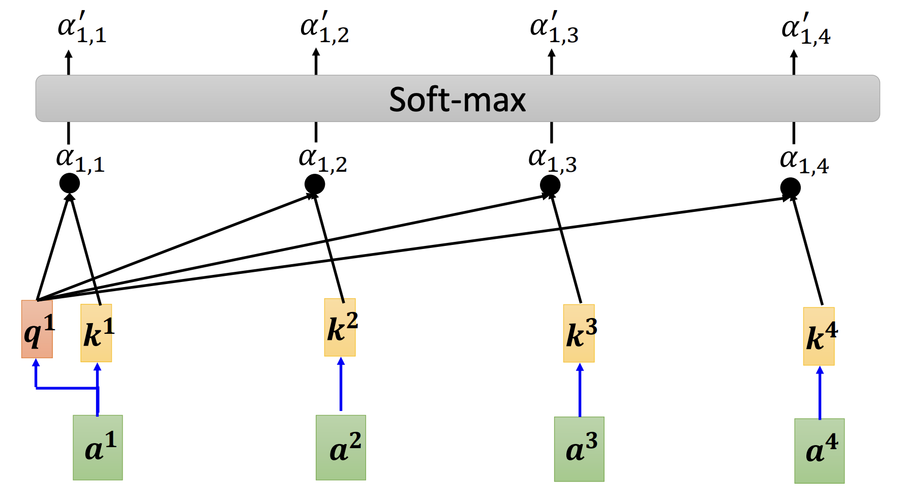
图5 attention score的soft-max过程
基于attention score进行特征提取
以图3中的b 1 b^1 b 1 ν \nu ν
b 1 = ∑ i α 1 ， i ′ ν i ν i = W ν a i b^1 = \sum_i{\alpha^{'}_{1，i}\nu^i} \\
\nu^i = W^\nu a^i
b 1 = i ∑ α 1 ， i ′ ν i ν i = W ν a i
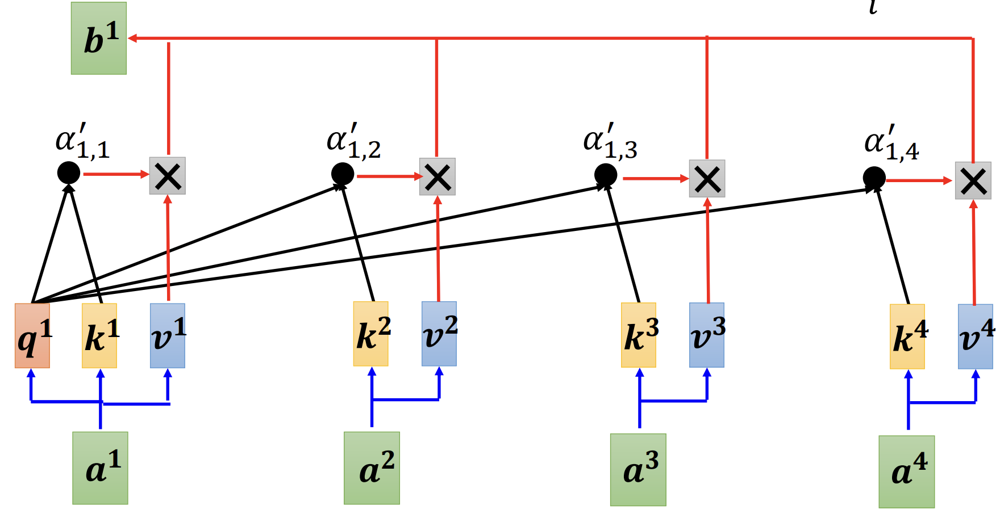
图6 self-attention的一次前向过程
并行计算
重复上述过程可以对b 2 ， b 3 ， b 4 b^2， b^3， b^4 b 2 ， b 3 ， b 4
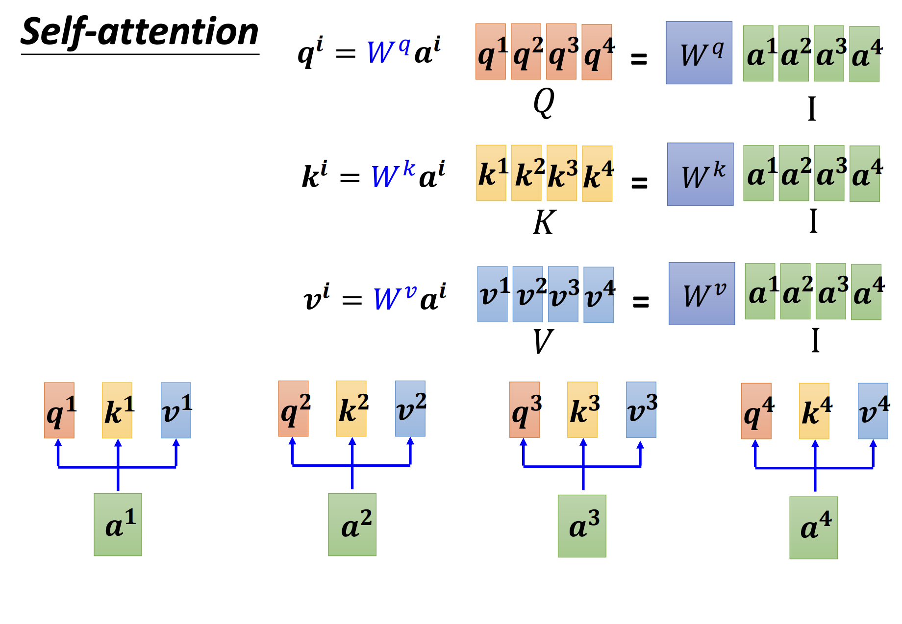
图7 Q， K， V的并行计算过程
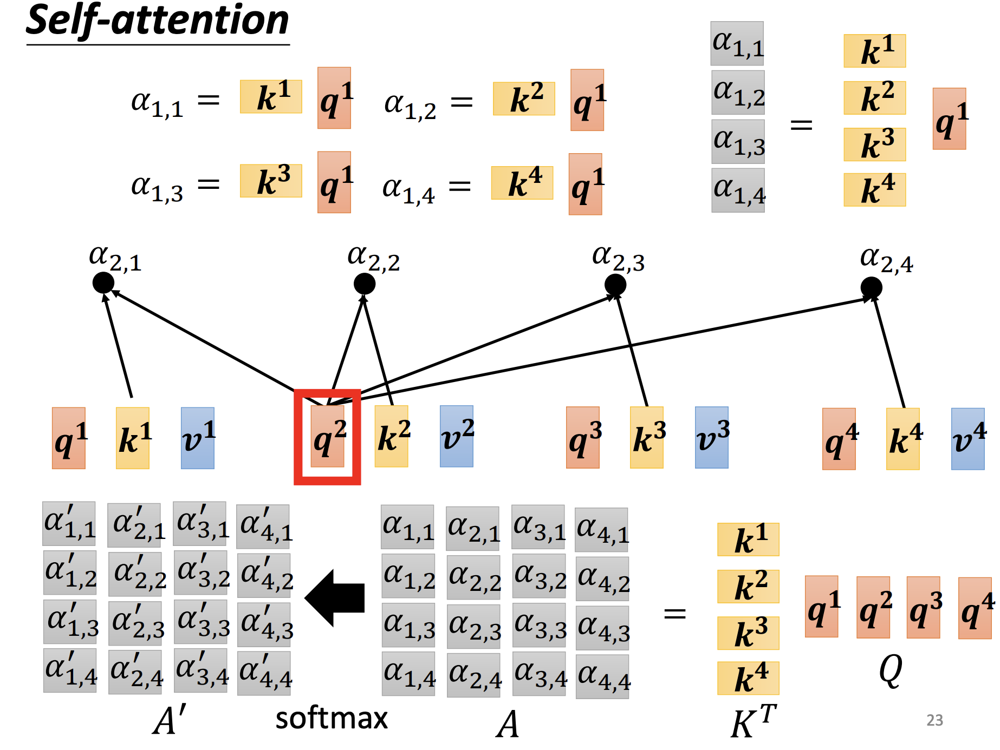
图8 attention score 并行计算过程
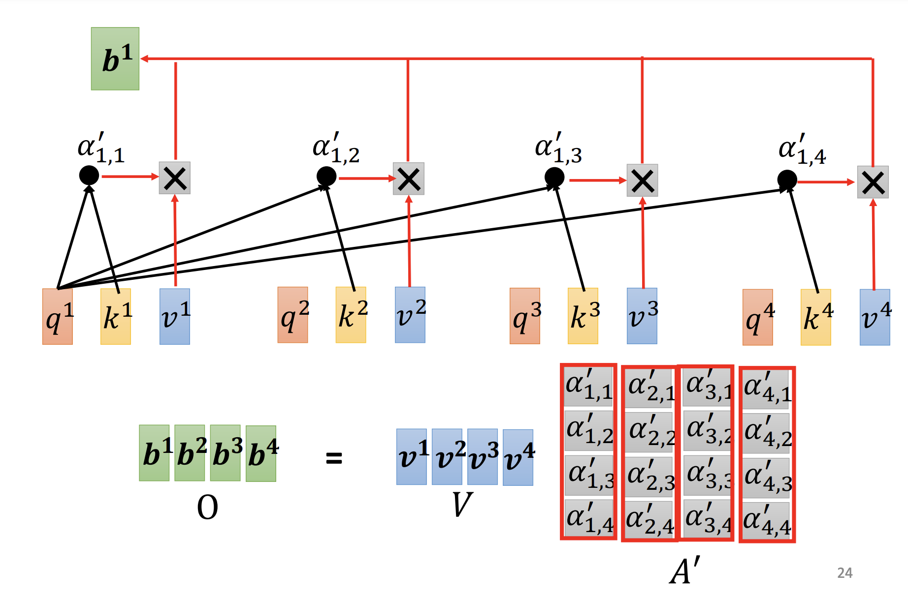
图9 b的并行计算过程
以公式表示并行过程如下，其中d k d_k d k
A t t e n t i o n ( Q ， K ， V ) = s o f t m a x ( Q K T d k ) V Attention(Q， K， V) = softmax(\frac{QK^T}{\sqrt{d_k}})V
A tt e n t i o n ( Q ， K ， V ) = so f t ma x ( d k Q K T ) V
Pytorch实现
1 2 3 4 5 6 7 8 9 10 11 12 13 14 15 16 17 18 19 20 21 22 23 24 25 26 27 28 29 30 31 32 33 34 35 36 37 38 39 40 41 42 43 44 45 import mathimport torchfrom torch import nn, Tensorclass ScaleDotProductAttention (nn.Module): """计算scale dot-product self attention """ def __init__ (self ) -> None : super ().__init__() self.soft_max = nn.Softmax(dim=-1 ) def forward ( self, query: Tensor, key: Tensor, value: Tensor, mask: Tensor=None , en_fill: float =1e-12 ): """ Args: query (Tensor): dot-product attention中的Q key (Tensor): dot-product attention中的K value (Tensor): dot-product attention中的V mask (Tensor, optional): 对输入序列的部分进行掩盖. Defaults to None. en_fill (float, optional): mask掩盖部分的填充值. Defaults to 1e-12. Returns: Tensor, Tensor: attention计算结果，attention score """ _, _, _, d_model = key.size() k_t = key.transpose(2 , 3 ) score = (query @ k_t) / math.sqrt(d_model) if mask is not None : score = score.masked_fill(mask == float ('-inf' ), -en_fill) score = self.soft_max(score) value = score @ value return value, score
Multi-Head Attention
原理
在CNN中，我们可以设置多个卷积核以实现提取多种特征的目的，在self-attention中可以通过multi-head 实现CNN中多个卷积核的作用，多头自注意力可以使模型每个head致力于特征空间的不同位置，它与self-attention的不同在于增加线性层将Q，K和V映射到不同的head上，然后将attention结果拼接，通过线性层映射回原来的大小，两者的不同如图10所示
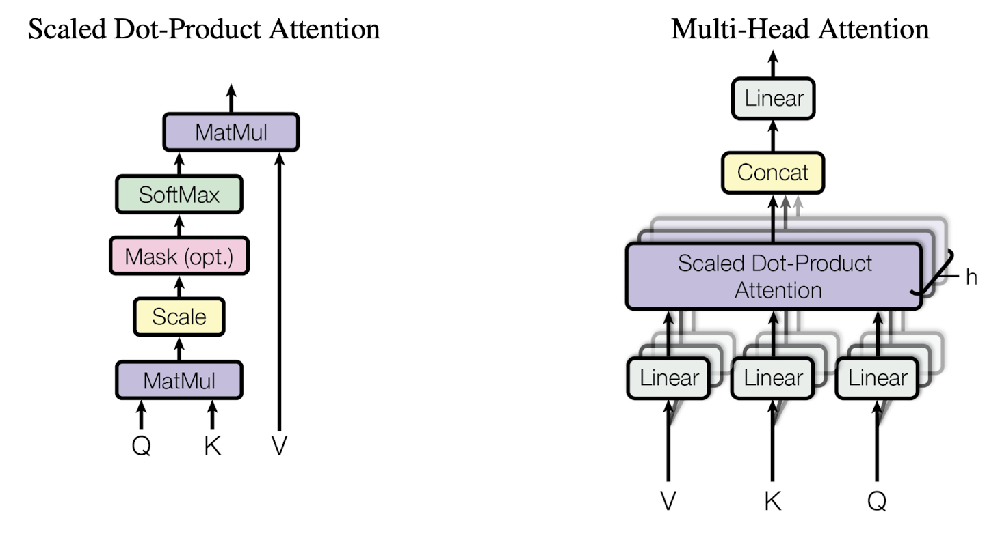
图10 Multi-Head Attention和Scale Dot-Product Attention的区别
Pytorch实现
1 2 3 4 5 6 7 8 9 10 11 12 13 14 15 16 17 18 19 20 21 22 23 24 25 26 27 28 29 30 31 32 33 34 35 36 37 38 39 40 41 42 43 44 45 46 47 48 49 50 51 52 53 54 55 56 57 58 59 60 61 62 63 64 class MultiHeadAttention (nn.Module): """多头自注意力""" def __init__ (self, d_model, n_head ) -> None : super ().__init__() self.n_head = n_head self.attention = ScaleDotProductAttention() self.w_q = nn.Linear(d_model, d_model * n_head) self.w_k = nn.Linear(d_model, d_model * n_head) self.w_v = nn.Linear(d_model, d_model * n_head) self.w_concat = nn.Linear(d_model * n_head, d_model) def forward (self, query: Tensor, key: Tensor, value: Tensor, mask=None ): """ Args: query (Tensor): dot-product attention中的Q, shape:[batch_size, length, d_model] key (Tensor): dot-product attention中的K, shape:[batch_size, length, d_model] value (Tensor): dot-product attention中的V, shape:[batch_size, length, d_model] mask (Tensor, optional): 对输入序列的部分进行掩盖. Defaults to None., shape:[length, length] Returns: Tensor: 多头注意力计算结果 """ query, key, value = self.w_q(query), self.w_k(key), self.w_v(value) query, key, value = self.split(query), self.split(key), self.split(value) out, _ = self.attention(query, key, value, mask=mask) out = self.concat(out) out = self.w_concat(out) return out def split (self, data: Tensor ): """按照head数量分割数据 Args: data (Tensor): [batch_size, length, head_d_model] Returns: Tensor: [batch_size, head, length, d_tensor] """ batch_size, length, head_d_model = data.size() d_model = head_d_model // self.n_head data = data.view(batch_size, length, self.n_head, d_model).transpose(1 , 2 ) return data def concat (self, data: Tensor ): """split的反向过程 Args: data (Tensor): [batch_size, head, length, d_model] Returns: Tensor: [batch_size, length, head_d_model] """ batch_size, head, length, d_model = data.size() head_d_model = head * d_model data = data.transpose(1 , 2 ).contiguous().view(batch_size, length, head_d_model) return data
Position-wise Feed-Forward networks
原理
在Transformer的编码器和解码器的每层最后都会跟一个全连接层(fully connected feed-forward network, FFN)，和普通的全连接层不同的是，它作用与序列中的每个点即Point-wise
F F N ( x ) = m a x ( 0 , x W 1 + b 1 ) W 2 + b 2 FFN(x) = max(0, xW_1 + b_1)W_2 + b_2
FFN ( x ) = ma x ( 0 , x W 1 + b 1 ) W 2 + b 2
Pytorch实现
1 2 3 4 5 6 7 8 9 10 11 12 13 14 15 16 17 18 19 20 21 22 23 class PositionwiseFeedForward (nn.Module): """FFN""" def __init__ (self, d_model: int , hidden: int , drop_prob: float =0.1 ) -> None : super ().__init__() self.linear1 = nn.Linear(d_model, hidden) self.linear2 = nn.Linear(hidden, d_model) self.relu = nn.ReLU() self.dropout = nn.Dropout(p=drop_prob) def forward (self, data: Tensor ): """ Args: data (Tensor): [batch_size, length, d_model] Returns: Tensor: [batch_size, length, d_model] """ data = self.linear1(data) data = self.relu(data) data = self.dropout(data) data = self.linear2(data) return data
Token Embedding
原理
Embedding的作用是给定任何一个词，它学习一个长为d m o d e l d_{model} d m o d e l
Pytorch 实现
Embedding的一个复杂的过程，模型既要能将词学到一个固定长度的向量，同时需要意思相近的词在向量空间也相似，Pytorch中有成熟的实现，我们可以直接使用，想要详细了解word embedding的可以参考Post not found: embedding原理
1 2 3 4 class TokenEmbedding(nn.Embedding): """Token Embedding in nn""" def __init__(self, vocab_size, d_model) -> None: super().__init__(vocab_size, d_model, padding_idx=1)
Positional Encoding
由于attention的每个输出对整个序列进行特征提取，丧失了循环神经网络和CNN中的序列间的位置关系的信息，所以需要一种策略来记录序列内相对位置信息，因此引入来poitional encoding的方法来记录位置，同时将位置信息映射到和token embedding相同的维度，因此可以将两个embeding的信息相加，positional encoding的计算方式如下：
P E ( p o s , 2 i ) = s i n ( p o s / 1000 0 2 i / d m o d e l ) P E ( p o s , 2 i + 1 ) = c o s ( p o s / 1000 0 2 i / d m o d e l ) PE(pos, 2i) = sin(pos/10000^{2i/d_model}) \\
PE(pos, 2i+1) = cos(pos/10000^{2i/d_model})
PE ( p os , 2 i ) = s in ( p os /1000 0 2 i / d m o d e l ) PE ( p os , 2 i + 1 ) = cos ( p os /1000 0 2 i / d m o d e l )
Pytorch 实现
1 2 3 4 5 6 7 8 9 10 11 12 13 14 15 16 17 18 19 20 21 22 23 24 class PositionEncoding (nn.Module): """Position Embedding""" def __init__ (self, d_model: int , drop_prob: float , max_len: int ) -> None : super ().__init__() self.dropout = nn.Dropout(p=drop_prob) pos = torch.arange(max_len).unsqueeze(dim=1 ) div_term = 10000 ** (torch.arange(0 , d_model, 2 ) / d_model) p_e = torch.zeros(1 , max_len, d_model) p_e[0 , :, 0 ::2 ] = torch.sin(pos / div_term) p_e[0 , :, 1 ::2 ] = torch.cos(pos / div_term) self.register_buffer('p_e' , p_e) def forward (self, data: Tensor ): """ Args: data (Tensor): [batch_size, length, d_model] Returns: Tensor: [batch_size, length, d_model] """ data = data + self.p_e[:, :data.size(1 ), :] return self.dropout(data)
编码器
解码器